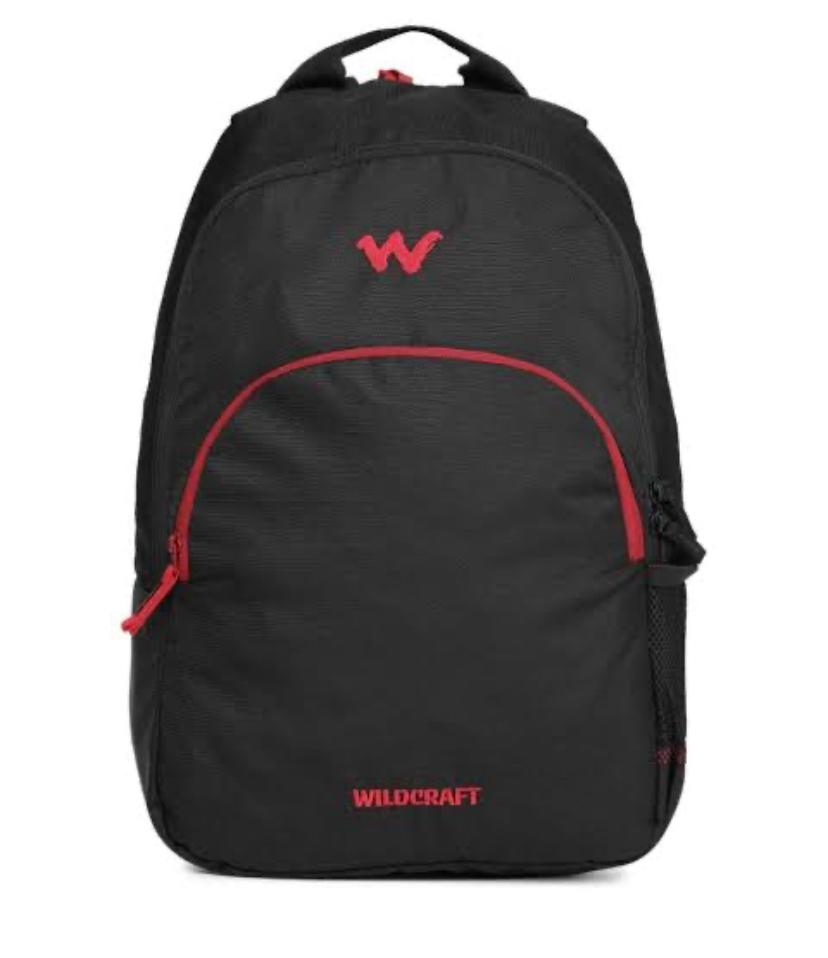
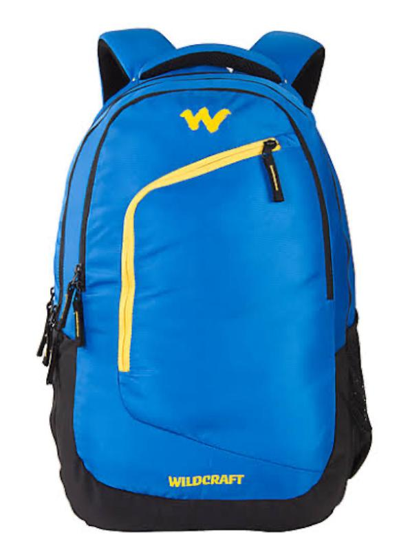
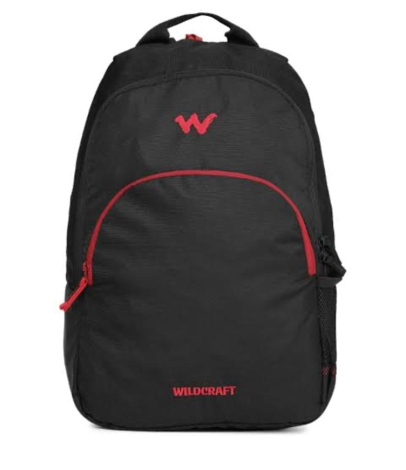
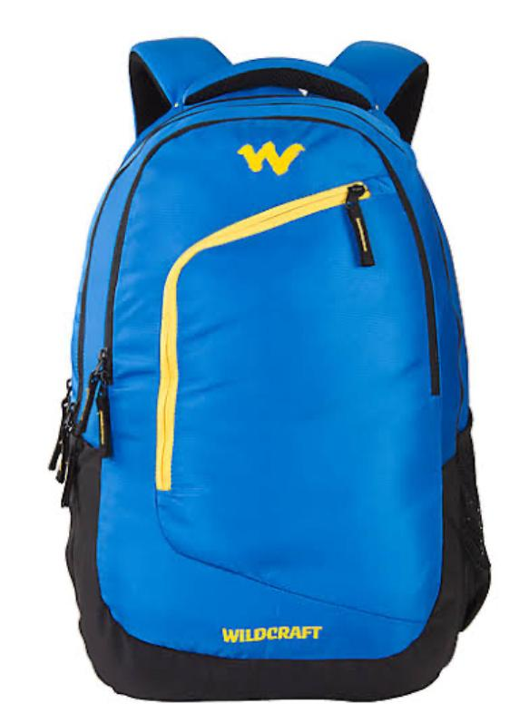

Wildcraft is an Indian company that designs, manufactures, and distributes outdoor gear, apparel, footwear,
and travel accessories.Wildcraft is an Indian company that designs, manufactures, and distributes outdoor gear,
apparel, footwear, and travel accessories.Wildcraft is an Indian company that designs, manufactures, and
distributes outdoor gear, apparel, footwear, and travel accessories.Established in 1998, it is known for its
head-to-toe solutions for trekking, travel, and outdoor activities. Wildcraft is headquartered in Bangalore and is
recognized as India's first and largest homegrown brand focused on outdoor adventure.
 


